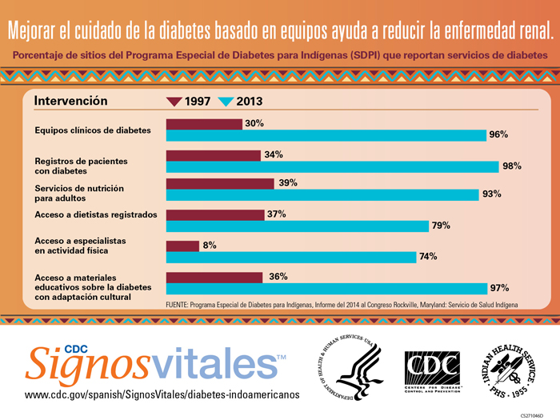

Se logra un notable progreso en la reducción de la insuficiencia renal causada por la diabetes en poblaciones indoamericanas
El éxito indica maneras de prevenir la insuficiencia renal y reducir los costos de salud de los Estados Unidos
 ShareCompartir
ShareCompartir
Comunicado de prensa
Embargado hasta la 2:30 p.m. hora del este. Martes, 10 de enero de 2017.
Contacto: Departamento de Relaciones con los Medios de Comunicación de los CDC
(404) 639-3286
Infografía: Las estrategias centradas en la población y basadas en equipos reducen las tasas de insuficiencia renal causada por diabetes en los indoamericanos y pueden ser un modelo para otros grupos.

Infografía: Mejorar el cuidado de la diabetes basado en equipos ayuda a reducir la enfermedad renal.
Los datos del gobierno federal muestran que las tasas de insuficiencia renal relacionada con la diabetes en adultos indoamericanos (indígenas americanos y nativos de Alaska) descendieron 54 % entre 1996 y el 2013. Esta notable reducción es posterior a las estrategias centradas en la población para el manejo de la diabetes y a las mejoras en la atención médica puestas en marcha por el Servicio de Salud Indígena (IHS, por sus siglas en inglés) a mediados de la década de los 80.
“El Servicio de Salud Indígena ha logrado un enorme progreso al aplicar estrategias centradas en la salud poblacional y basadas en equipos para abordar la diabetes y la insuficiencia renal”, dijo el director de los CDC, Tom Frieden, M.D., M.P.H. Y agregó, “se puede lograr una drástica diferencia en la reducción de las complicaciones de la diabetes para todas las personas en los Estados Unidos con una sólida atención médica coordinada y educación, así como con acercamiento comunitario y cambios ambientales”.
Los indoamericanos tienen mayores probabilidades de presentar diabetes que cualquier otro grupo racial o étnico de los Estados Unidos. La diabetes es la principal causa de insuficiencia renal en los Estados Unidos. Aproximadamente 2 de cada 3 indoamericanos con insuficiencia renal tienen diabetes, según el informe Signos Vitales de este mes. Sin embargo, las tasas de insuficiencia renal relacionada con la diabetes se han reducido con mayor rapidez en los indoamericanos que en cualquier otro grupo racial o étnico en los Estados Unidos. La insuficiencia renal es una afección devastadora y costosa que requiere que la persona reciba diálisis regularmente o un trasplante de riñón para sobrevivir. Según el informe Signos Vitales, el costo anual estimado de la insuficiencia renal causada por la diabetes en el 2013 fue de 82 000 dólares por persona y de 14 000 millones para Medicare en general. La insuficiencia renal relacionada con la diabetes se retrasa o previene al controlar la presión arterial y los niveles de azúcar en la sangre, usar medicamentos protectores de los riñones y hacer pruebas de los riñones regularmente.
“La reducción del 54 % en la insuficiencia renal causada por la diabetes se produjo después de que el Servicio de Salud Indígena implementó estrategias de salud pública y centradas en la población para abordar la diabetes, así como mejoras en la atención médica” dijo Mary L. Smith, subdirectora principal del Servicio de Salud Indígena. “Creemos que estas estrategias pueden ser eficaces en cualquier población. El paciente, la familia y la comunidad son todos socios clave en el manejo de las enfermedades crónicas, como la diabetes”, agregó.
Los hallazgos clave en el informe incluyen:
- A pesar de las disparidades socioeconómicas y de salud bien documentadas en la población indoamericana, las tasas de insuficiencia renal causada por la diabetes se han reducido significativamente desde 1996.
- El cuidado respaldado por el Servicio de Salud Indígena para los indoamericanos con diabetes ha mejorado.
- El uso de medicamentos para proteger los riñones aumentó significativamente, de 42 a 74 %, en 5 años.
- La presión arterial promedio en los indoamericanos con diabetes e hipertensión está bien controlada (133/76 en el 2015).
- Mejoró un 10 % el control de los niveles de azúcar en la sangre entre 1996 y el 2014.
- Más del 60 % de los indoamericanos de 65 años y mayores que tienen diabetes se hicieron pruebas en orina para la detección de daño renal (2015) en comparación con el 40 % de la población de Medicare con diabetes (2013).
El gobierno federal está apoyando la lucha contra la insuficiencia renal en los indoamericanos y otras poblaciones de los Estados Unidos al hacer lo siguiente:
- Financiar servicios para la prevención y el tratamiento de la diabetes en las comunidades indoamericanas a través del Programa Especial de la Diabetes para Indígenas.
- Crear un sistema nacional de seguimiento de la enfermedad renal crónica y sus complicaciones.
- Ayudar a los centros de salud comunitaria en todos los Estados Unidos a proporcionar un cuidado integral de la diabetes.
Para leer todo el informe de Signos Vitales, visite: www.cdc.gov/spanish/SignosVitales/diabetes-indoamericanos
Para obtener más información sobre el trabajo del Servicio de Salud Indígena y los CDC, visite: www.ihs.gov and www.cdc.gov.
Información sobre Signos Vitales
Signos Vitales es un informe que se publica como parte del Informe Semanal de Morbilidad y Mortalidad de los CDC. Signos Vitales proporciona los datos y la información más actualizada sobre indicadores de salud clave como la prevención del cáncer, la obesidad, el consumo de tabaco, la seguridad de los pasajeros en vehículos automotores, las sobredosis por medicamentos recetados, el VIH/sida, el consumo de alcohol, las infecciones asociadas a la atención médica, la salud cardiovascular, los embarazos en la adolescencia, la seguridad de los alimentos y la hepatitis viral.
###
Departamento de Salud y Servicios Humanos de los EE. UU.
Los CDC trabajan de día y de noche para salvar vidas y proteger al público contra amenazas a la salud con el fin de mejorar la seguridad de la nación. Ya sean amenazas crónicas o agudas, causadas por el hombre o resultado de un desastre natural, un error humano o un ataque deliberado, globales o nacionales, los CDC son la agencia nacional de protección de la salud en los EE. UU.
Ayuda con formatos de archivos:
¿Cómo se visualizan los diferentes formatos de archivos (PDF, DOC, PPT, MPEG) en este sitio?- Esta página fue revisada el: 10 de enero de 2017
- Esta página fue modificada el: 10 de enero de 2017
- Fuente del contenido:
- Centros para el Control y la Prevención de Enfermedades, traducido por CDC Multilingual Services